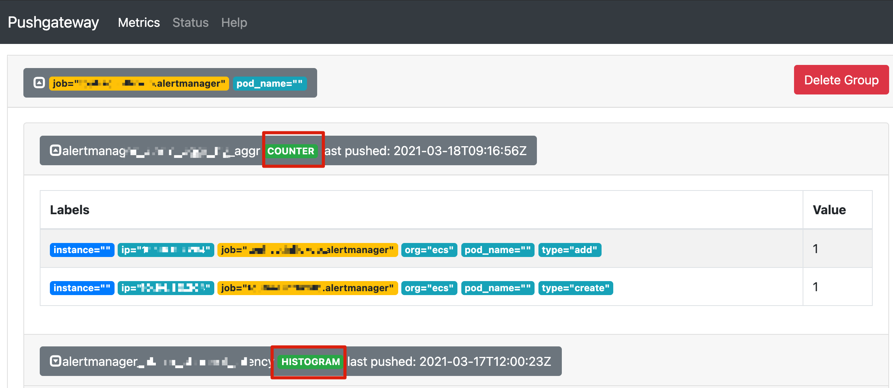
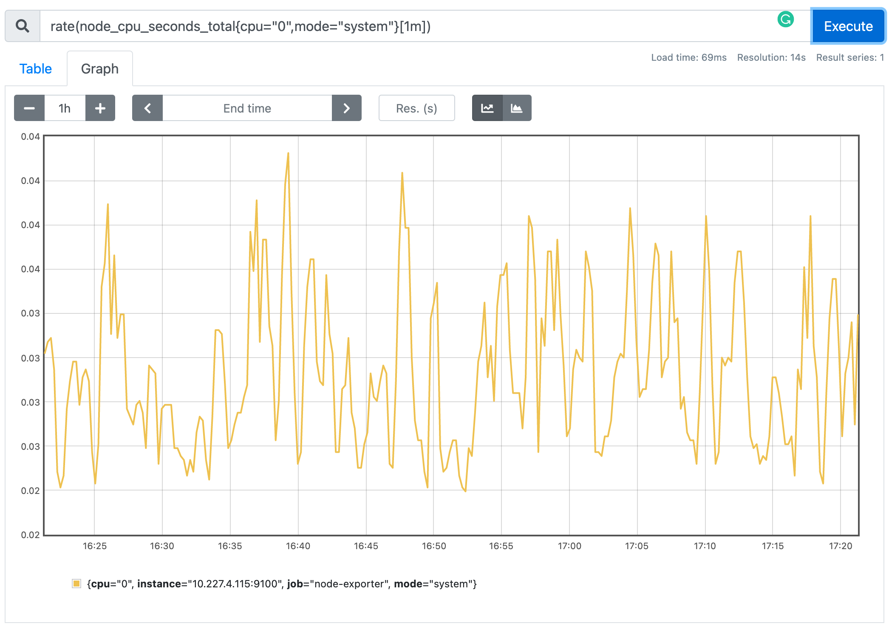
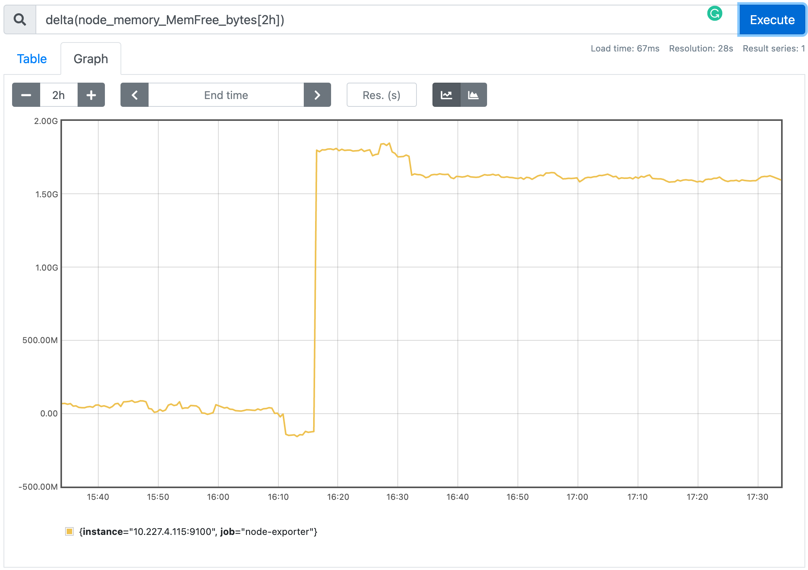

Airren Ren
Saturday, December 11, 2021
「Prom」Prometheus 安装及使用简介
Prometheus Intro
Prometheus 是SoundCloud开源的系统监控和报警工具集。通过Prometheus可以进行时序数据的采集、监控和报警。
时序数据模型 Time Series Data Model
Metric 是一个对时序指标的统称，例如.：http_requests_total - the total number of HTTP requests received，就可以称为一条Metric
在Prometheus 中每一个时序序列(time-series)都是由于Metric Name 和Lable{Key-Value}组成的
例如：
1http_request_total{url="/ping",status=200}
Metric Name： http_request_total 在Prometheus中Metric Name只能由大小写字母、数字、下划线、冒号组成，且不能以数字开头，对应正则为[a-zA-Z_:][a-zA-Z0-9_:]*。冒号保留，会在定义规则的时候使用。
Label Name: host 和status都属于Label. 在Prometheus中Label Name只能由大小写字母、数字、下划线组成，且不能以数字开头，对应的正则为[a-zA-Z_][a-zA-Z0-9_]*。一般_开头的Labels保留位系统内部使用。
Notation
Given a metric name and a set of labels, time series are frequently identified using this notion:
1<Metric Name>{<Label Name>=<Label Value>,...}
For example, a time series with the mertric name api_http_request_total and the label method="POST" and handler=“message”` could be written like this. This is the same notation that OpenTSDB uses.
1api_http_request_total{method="POST", handler="/messages"}
2node_cpu_seconds_total{cpu="2",mode="system"}
1<--- metric name------><-----lable set------><-timestamp -><-value->
2node_cpu_seconds_total{cpu="2",mode="system"}@1434417560938 195721.31
3# timestamp 是毫秒级时间戳
4# value 有且只有一个 float64
__作为前缀标签，只能在系统内部使用。 Prome底层实现指标名称是以__name__=<metric name>形式存储的，以下两种表达方式是相同的。1api_http_request_total{method="POST", handler="/messages"} 2{__name_=api_http_request_total, method="POST", handler="/messages"}
Component
所有基础组件的安装都基于Docker。
Prometheus
1docker pull prom/prometheus
2docker run -d -p 9090:9090 --name prometheus prom/prometheus
安装完成后可以访问9090端口，可以看到Prometheus管理页面。如下图为查询go_routines的情况。
查询当前数据：
1GET http://devbox:9090/api/v1/query?query=go_goroutines&time=1610127237.659

查询历史数据：
1GET http://devbox:9090/api/v1/query_range?query=go_goroutines&start=1610126024.257&end=1610126924.257&step=3

配置/etc/prometheus/prometheus.yaml
1# my global config
2global:
3 # 拉取target的默认时间间隔
4 scrape_interval: 15s # Set the scrape interval to every 15 seconds. Default is every 1 minute.
5 evaluation_interval: 15s # Evaluate rules every 15 seconds. The default is every 1 minute. 执行Rule的时间间隔
6 # scrape_timeout is set to the global default (10s). 拉取超时时间
7
8# Alertmanager configuration
9alerting:
10 alertmanagers:
11 - static_configs:
12 - targets:
13 # AlertManager ip:port 可以配置多个
14 # - alertmanager:9093
15
16# Load rules once and periodically evaluate them according to the global 'evaluation_interval'.
17rule_files:
18 # - "first_rules.yml" # 规则配置文件
19 # - "second_rules.yml"
20
21# A scrape configuration containing exactly one endpoint to scrape:
22# Here it's Prometheus itself.
23scrape_configs:
24 # The job name is added as a label `job=<job_name>` to any timeseries scraped from this config.
25 - job_name: 'prometheus'
26 # metrics_path defaults to '/metrics'
27 # scheme defaults to 'http'.
28 static_configs:
29 - targets: ['localhost:9090']
30 - job_name: 'pushgateway'
31 # metrics_path defaults to '/metrics'
32 # scheme defaults to 'http'.
33 static_configs:
34 - targets: ['10.x.x.115:9091']
35 - job_name: 'alertmanager'
36 # metrics_path defaults to '/metrics'
37 # scheme defaults to 'http'.
38 static_configs:
39 - targets: ['10.x.x.115:9093']
PushGateway
1docker pull prom/pushgateway
2docker run -d --restart=always --name pushgateway -p 9091:9091 prom/pushgateway

AlertManager
1docker run -d --restart=always --name alertmanager -p 9093:9093 prom/alertmanager
配置
WebHook Test
1import SimpleHTTPServer
2import SocketServer
3
4PORT = 5001
5
6class ServerHandler(SimpleHTTPServer.SimpleHTTPRequestHandler):
7
8 def do_POST(self):
9 content_len = int(self.headers.getheader('content-length', 0))
10 post_body = self.rfile.read(content_len)
11 print post_body
12 self.send_response(200)
13 self.end_headers()
14
15Handler = ServerHandler
16
17httpd = SocketServer.TCPServer(("", PORT), Handler)
18
19print "serving at port", PORT
20httpd.serve_forever()
Prometheus 数据类型 Metric Type
These are currently only differentiated in the client libraries and in the wire protocol. The prometheus server does not yet make user of the type information and flattens all data into untyped time series.
Counter
A counter is a cumulative metric that represents a single monotonically increasing counter whose value can only increase or be reset to zero on restart. For example, you can use a counter to represent the number of requests served, tasks completed, or errors.
只增不减，计数器
Counter类型的指标相当于一个计数器，只增不减。除非Prometheus Client重启，将重新计数。例如：http_request_total。
例如：node_cpu_seconds_total{cpu="0",mode="system"}
原始指标

rate()获取增长率
rate始终大于0

topk() 获取top k数据

Gauge
A gauge is a metric that represents a single numerical value that can arbitrarily go up and down.
Gauges are typically used for measured values like temperatures or current memory usage, but also “counts” that can go up and down, like the number of concurrent requests.
Gauge 相当于一个仪表盘，可增可减，是一个瞬时值。 例如：node_memory_MemFree（主机当前空闲的内容大小）、node_memory_MemAvailable（可用内存大小）都是Gauge类型的监控指标。
原始指标

delta() 在一定时间内的差异 每个点与过去2h的差异


deriv()计算样本线性回归模型
predict_linear(node_memory_MemFree_bytes[10h], 4*3600) 预测未来4h的指标情况
Histogram
A histogram samples observations (usually things like request durations or response sizes) and counts them in configurable buckets. It also provides a sum of all observed values.
柱状图，用于观察结果采样，分组及统计。例如： 请求持续时间。是对一段时间内的数据进行采样，并能够对其指定区间以及总数进行统计。需要根据区间计算。
Histogram指标直接反应了在不同区间内样本的个数，区间通过标签le进行定义。

Summary
Similar to a histogram, a summary samples observations (usually things like request durations and response sizes). While it also provides a total count of observations and a sum of all observed values, it calculates configurable quantiles over a sliding time window.
类似Histogram, 用于表示一段时间内的数据采样结果，不是临时算出来的，结果早已存储。

长尾问题
如果大多数API请求都维持在100ms的响应时间范围内，而个别请求的响应时间需要5s，那么就会导致某些WEB页面的响应时间落到中位数的情况，而这种现象被称为长尾问题。
为了区分是平均的慢还是长尾的慢，最简单的方式就是按照请求延迟的范围进行分组。例如，统计延迟在0~10ms之间的请求数有多少而10~20ms之间的请求数又有多少。通过这种方式可以快速分析系统慢的原因。Histogram和Summary都是为了能够解决这样问题的存在，通过Histogram和Summary类型的监控指标，我们可以快速了解监控样本的分布情况。
数据存入Prome

存入Prom的点会自动添加Instance&job 两个tag
实际打点
数据存入Prom后会自动加上

instance&job两个tag
PromQL
PromQL是Prom的数据查询DSL(Domain Specified Language)语言。
结果类型：
| Type | Desc | Demo |
|---|---|---|
| 瞬时数据（Instant Vector） | 包含一组TimeSeries，每个时序只有一个点 | http_request_total |
| 区间数据（Range Vector） | 包含一组TimeSeries, 每个时序有多个点 | http_request_total[5m] |
| 纯量数据（Scalar） | 只有一个数据，没有Time Series | count(http_request_total) |
查询方式
1logback_events_total{level="info"}
查询支持正则匹配
1http_request_total{code!="200"} # code != 200
2http_request_total{code=~"2.."} # code = 2xx
3http_request_total{code!~"2.."} # code != 2xx
其他查询
1# 取整
2floor(avg(http_request_total{code="200"}))
3ceil(avg(http_request_total{code="200"}))
4# 查看每秒数据
5rate(http_request_total[5m])
6
7#模糊查询： level="inxx
8logback_events_total{level=~"in.."}
9logback_events_total{level=~"in.*"}
聚合查询：
1# count
2count(logback_event_total)
3# sum
4sum(logback_event_total)
5# avg
6avg(logback_event_total)
7# topk
8topk(2, logback_events_total)
9
10# irate 如查询过去5分钟的平均值
11irate( logback_events_total[5m])